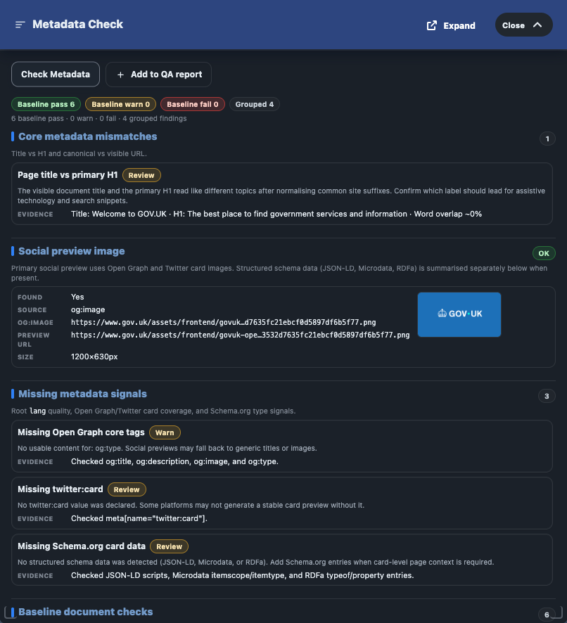

Automated checks support review
The extension identifies high-confidence current-page findings, but automated output does not prove full WCAG conformance.
Public extension documentation
A local-first Chrome extension that supports accessibility review by running current-page checks, separating confirmed issues from review evidence, and exporting handoff-ready reports.
Fresh public screenshots and video were captured from the extension body while GOV.UK was used as the test page. Automated output supports review; it does not certify WCAG conformance or replace manual testing.

The extension identifies high-confidence current-page findings, but automated output does not prove full WCAG conformance.
Needs-review, advisory, limitation, and diagnostic outputs are labelled so they are not filed as confirmed failures without human verification.
The documented extension package processes scan evidence in the browser and creates exports only after user action.
Reports may include URLs, selectors, snippets, screenshots where captured, diagnostics, and reviewer notes.
The screenshots and video below were captured from the A11Y Cat panel while https://www.gov.uk/ was used as the live test page. The tested site is intentionally not visible in these public media assets.
| Classification | Meaning | Primary action |
|---|---|---|
| Confirmed issue | Highest-confidence issue evidence for the current rendered state, usually from axe-core or strict A11Y Cat checks that pass reliability gates. | Treat as a remediation candidate, then retest and confirm user impact in context. |
| Needs review | Evidence that needs human judgement, visual inspection, interaction, or assistive technology testing before it becomes a defect. | Inspect manually and record the decision before reporting it as a failure. |
| Advisory | Helpful quality, metadata, language, spelling, or review-readiness signal. | Use as guidance. Do not count it as a definite WCAG failure. |
| Limitation | A known boundary of what the extension could not inspect, calculate, or prove. | Use another method for the uncovered state and avoid coverage overclaims. |
| Diagnostic | Technical support information about permissions, injection, storage, runtime, exports, or scan coverage. | Use for troubleshooting and traceability. Do not treat it as a page failure. |
A11Y Cat Extension supports accessibility review and remediation workflows. It does not certify production readiness, prove WCAG conformance, detect every issue, or replace manual accessibility and assistive technology testing.
{kind=link}
{kind=link}
{kind=link}
{kind=link}
{kind=link}
{kind=link}
{kind=link}